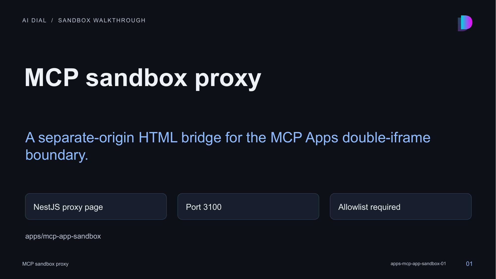

01 · MCP sandbox proxy

Speaker notes and sources
This small application serves the sandbox-proxy document used by the MCP UI renderer. It must be deployed on an origin distinct from the chat host. It is an infrastructure component of the rendering boundary, not a catalog demo.
- apps/mcp-app-sandbox/README.md:1-60
- apps/mcp-app-sandbox/src/main.ts:1-49